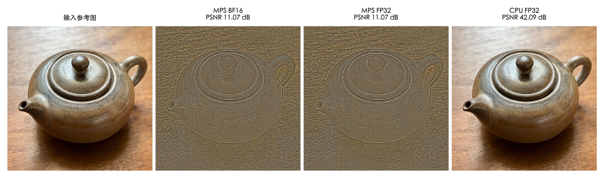
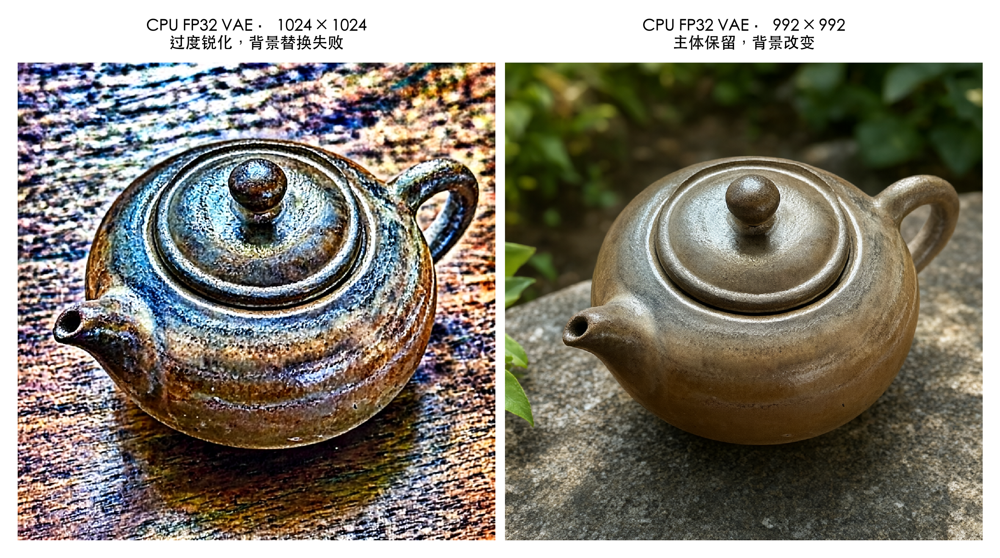
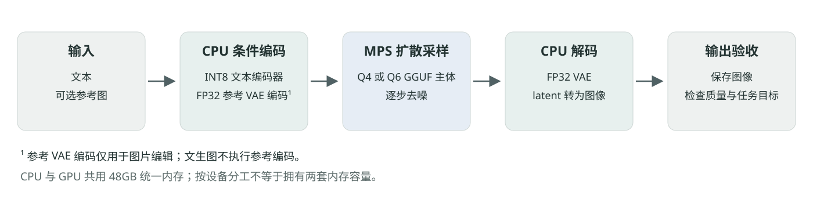
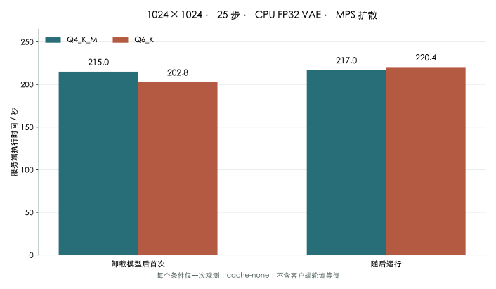
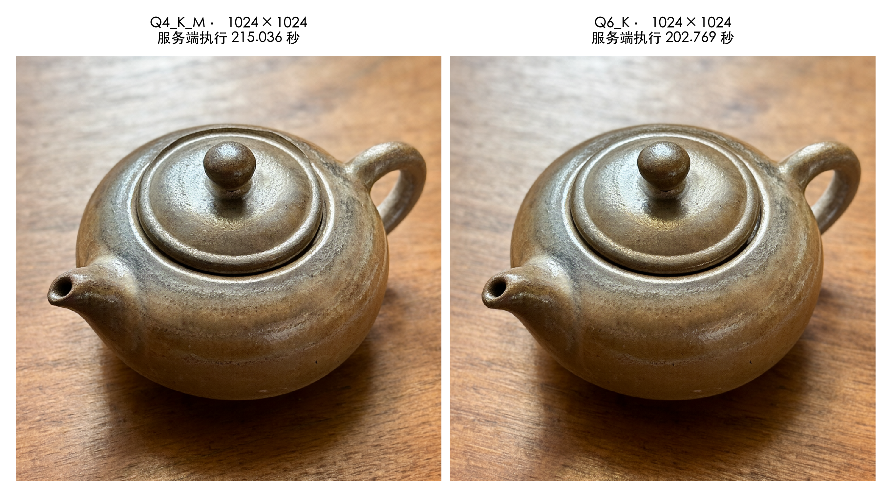
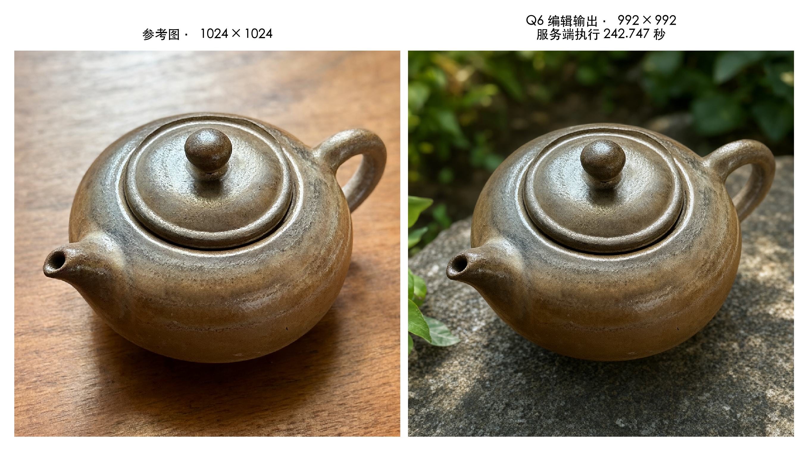

从环境隔离、MPS 编码异常到 Q4/Q6 对照与服务管理的工程实践
实验日期：2026 年 10 月 20 日
本文定位：单机工程案例。性能结果为固定配置下的观测，故障根因以已完成的隔离实验为限。
摘要
在 Apple Silicon 上部署图像生成模型，启动服务只是验收的起点。本文记录一台 M5 Pro、48GB 统一内存 Mac 上的 Qwen-Image 2.1 部署实践，重点讨论环境隔离、静默画质故障、量化版本对照与运行管理。固定版本的 ComfyUI 和 GGUF 插件能够完成 Q4、Q6 文生图；图片编辑则先后暴露出 MPS VAE 回环异常与特定参考尺寸下的输出退化。采用 CPU FP32 VAE，并将已测方形编辑工作流改为 992×992 后，两种量化版本均通过图片编辑验收。后续完成 25 个生成任务并逐图检查；四轮 1024×1024、25 步文生图的服务端执行时间为 202.8—220.4 秒。每种量化版本各 10 个正常敏感视觉样例均未观察到显式拒绝或空白输出，但存在文字、肢体和场景指涉不足。这些结果适用于本机固定配置和有限样例，不构成通用性能排名或全面的内容边界评测。
关键词：Apple Silicon；ComfyUI；GGUF；MPS；VAE；图像编辑；工程验收
1 先把验收目标拆开
这次部署最有价值的发现来自一次看似成功的请求：ComfyUI API 返回任务成功，保存节点也写出了图片，但输出呈现浮雕状失真，背景没有按提示词替换。如果只检查 HTTP 状态、任务历史或图片文件是否存在，故障就会被当作一次正常生成。
图像模型的验收因此至少需要三个层次。首先确认服务和工作流能执行；其次检查图片是否出现空白、噪声、明显结构失真等异常；最后核对主体保留、背景改变、文字呈现等任务目标。三个层次应分别记录，不能用“API 成功”代替“结果正确”。
本项目的目标是在不改动既有 27B 文本模型环境的前提下，建立独立的图像生成项目，完成文生图、图片编辑和本地管理验证。采用的文件来自 abenzerps/Qwen-Image-2.1-Uncensored-Quantized 仓库。名称中的 Uncensored 是发行方命名，本文不据此预设模型的内容边界。模型仓库
1.1 把“能用”改写成可检查的交付条件
这不是一台专用测试机。既有文本模型已经完成部署，图像项目需要在同一台机器上长期共存。于是，安装成功还必须包含环境可分离、服务可切换、工作流可复核三个条件。若一次生图依赖临时修改全局 Python，或者每次启动都要手动猜测哪些进程可以结束，即使图片正常，也还没有形成稳定的工程交付。
本次按下表组织验收。每一层都有独立证据，也有它不能回答的问题。
| 验收层次 | 检查内容 | 不能据此推出的结论 |
|---|---|---|
| 文件完整性 | 文件大小、全文件哈希、格式头与张量偏移 | 权重能在当前后端正确运算 |
| 依赖与服务 | 固定提交、独立依赖、本机 HTTP 就绪 | 工作流已加载模型并完成生图 |
| 执行完整性 | 节点执行结束、输出文件可解码 | 图像无失真、编辑目标已实现 |
| 视觉与任务 | 检查主体、背景、结构、文字和指令覆盖 | 任意提示词、尺寸都可靠 |
| 资源与管理 | 串行切换、队列保护、内存采样 | 外部启动器永远不会绕过管理器 |
这样的拆分还影响错误处理：文件哈希错误应回到下载阶段，VAE 回环失真应先缩短计算链路，图像结构正常但没有完成换背景则需要继续检查条件编码与编辑尺寸。它们不宜统一处理为“换个种子再试”。
2 固定环境和模型文件
实验硬件为 M5 Pro Mac，统一内存 48GB、SSD 1TB，操作系统为 macOS 26.5.1。扩散采样使用 PyTorch MPS 后端；最终验收配置把文本编码器和 VAE 放在 CPU 上。图像项目独立使用 Python 虚拟环境，不与 MTPLX、MLX-VLM 或 MLX 共用依赖。
2.1 先固定软件，再固定权重
| 组件 | 实验版本 |
|---|---|
| Python | 3.12.13，ARM64 |
| ComfyUI | 0.42.0 |
| ComfyUI 固定提交 | 8f04fd6ecf4a548937971e840af2a985529fab76 |
| ComfyUI-GGUF 来源 | leejet/ComfyUI-GGUF |
| GGUF 插件固定提交 | 373048b8403a7820620065210a691263d4da0a61 |
| PyTorch / torchvision | 2.11.0 / 0.26.0 |
| gguf / transformers | 0.19.0 / 5.20.2 |
| safetensors | 0.8.0 |
| comfy-kitchen / comfy-aimdo | 0.2.39 / 0.5.6 |
固定提交比“安装最新版”更便于复核。GGUF 插件的选择依据是模型发行说明和已安装源码对 qwen_image21 架构的支持；这里使用的是上述分支，不应把不同 GGUF 实现或不同依赖版本的结果混在一起。ComfyUI · GGUF 插件
模型下载固定在仓库提交 7959e658915f52274897fb573ffeda49de8dc16b，只选择四个文件，没有下载整个仓库。
| 用途 | 文件名 | 实际大小，字节 | 十进制 GB |
|---|---|---|---|
| Q4 扩散主体 | qwen-image-2.1-UC-Q4_K_M.gguf |
4,604,558,112 | 4.605 |
| Q6 扩散主体 | qwen-image-2.1-UC-Q6_K.gguf |
5,876,556,576 | 5.877 |
| 文本编码器 | qwen3vl_8b_int8_convrot.safetensors |
9,350,798,360 | 9.351 |
| VAE | qwen_image_2.1_vae_bf16.safetensors |
675,509,688 | 0.676 |
四个文件合计 20,507,422,736 字节，约 20.51GB。Q4、Q6 共用文本编码器和 VAE，二者是可替换的扩散主体，不需要同时加载。下载器采用 HTTPS Range 和分块检查点续传，完成后核对文件大小及完整 SHA-256；哈希同时与仓库 LFS 元数据和 SHA256SUMS 比对。GGUF 与 Safetensors 的头部和张量偏移也做了静态检查。
目录按职责分开：应用放在 ~/AI/apps/ComfyUI，独立环境位于其 .venv；脚本、工作流和实验记录放在 ~/AI/projects/Qwen-Image-Local。模型直接下载到 ComfyUI 对应目录，依赖下载缓存和 Hugging Face 路径单独设置，避免清理或改动既有文本模型的共享缓存。服务仅绑定 127.0.0.1:8188，运行时启用离线模式。
下载校验与日常启动检查承担不同职责。首次交付的完整哈希用于确认拿到的文件与固定仓库记录一致；日常管理器则检查必需文件的存在、大小和既有校验证据，避免每次启动都重新读取约 20.51GB 权重。后者不能发现此后所有可能的同大小文件损坏。迁移硬盘、异常断电或重新下载之后，应重新做完整哈希核对。静态格式检查也只能证明文件组织可解析，不能替代后端执行。
2.2 文件体积不是运行内存预算
Q4 和 Q6 的磁盘差额为 1,271,998,464 字节，约 1.27GB；这是扩散主体文件的差异，不是整个应用的内存差额。运行时还要容纳文本编码器、VAE、激活张量、中间图像、计算临时区以及框架和桌面应用。CPU 与 MPS 共享统一内存，把编码器移到 CPU 不会产生另一份独立的内存容量。
因此，不能用“48GB 减去四个文件大小”推算剩余可用内存，也不能把两个扩散主体的磁盘体积相加，当作正常单次任务的常驻开销。本项目的调度单位是一次选择一种主体的工作流。文本模型与图像服务的串行管理，则进一步降低了两个大型任务同时占用资源的机会。
2.3 文生图和图片编辑共享哪些节点
四份交付工作流由相同的加载、采样和保存节点组成，关键区别在参考条件与初始 latent 的来源。这里的 latent 是模型采样所处理的中间表示；它的尺寸必须与参考条件对应，不能只按最终 PNG 的期望大小随意设置。
| 环节 | 文生图工作流 | 图片编辑工作流 |
|---|---|---|
| 扩散主体 | UnetLoaderGGUF 选择 Q4 或 Q6 |
相同 |
| 文本条件 | CPU CLIPLoader → TextEncodeQwenImage21 |
同时输入参考图与 VAE |
| 画布来源 | EmptyLatentImage，1024×1024 |
使用条件节点输出的 latent，已测方形为 992×992 |
| 采样与输出 | KSampler → VAEDecode → SaveImage |
相同，但前面增加参考 VAE 编码 |
这种对应关系解释了一个容易忽略的细节：编辑工作流中，调整 resolution 后应继续使用条件节点的 latent 输出。仅修改另一个画布节点的宽高，可能让参考图处理尺寸和采样画布脱节。复现应复制完整图结构，而不只是加载相同的权重文件。
3 用 VAE 回环隔离编码异常
完整编辑链路同时涉及参考图预处理、文本与视觉条件编码、扩散采样、VAE 解码。出现异常时，直接更换提示词或量化版本，会让定位变量迅速增多。
本次先移除扩散模型和文本编码器，仅保留“读入同一张参考图 → VAE 编码 → VAE 解码 → 保存”的回环。这个实验不要求重建图逐像素完全等于输入，但足以判断 VAE 是否已把正常参考图编码成严重失真的表示。
对同一张 1024×1024 参考图，按 RGB 通道计算均方误差。像素取值范围为 0—255，PSNR 定义为 10 × log10(255² / MSE)。
| VAE 运行配置 | MSE | RGB PSNR，dB |
|---|---|---|
| MPS BF16 | 5087.96 | 11.07 |
| MPS FP32 | 5088.17 | 11.07 |
| CPU FP32 | 4.02 | 42.09 |


MPS 上单独提高到 FP32，没有改善这次异常；改为 CPU FP32 后，回环误差明显降低。这个结果把问题缩小到了 VAE 的后端执行路径，而不是提示词、采样步数或 Q4/Q6 主体选择。它仍不足以在本机锁定某一个底层算子为最终根因。上游 Issue #16433 存在相似的 MPS VAE 编码报告，可作为交叉线索，而不能用其中另一台机器的数值代替本机测量。上游问题 #16433
最终配置采用 --cpu-vae --fp32-vae。前者选择 VAE 的 CPU 路径，后者明确固定其运算精度；扩散主体仍在 MPS 上执行。磁盘中的 BF16 VAE 文件没有改写，Q4、Q6 主体也没有被转换成 FP32。42.09dB 只说明本次参考图的回环重建误差较小，不代表无损编码，更不能代替完整编辑任务的视觉检查。
3.1 隔离实验改变了哪些判断
这个回环实验的价值在于移除了最容易引入解释分歧的变量。没有提示词，就不能把浮雕状失真归因于模型误解了“花园”；没有扩散主体，就不能用扩散主体的量化精度解释这个回环异常。MPS FP32 与 MPS BF16 的结果又十分接近，说明对这个输入简单提高运算精度没有解决问题。CPU FP32 恢复正常，为选择可用后端提供了直接证据。
但设备切换仍可能同时改变多项底层执行细节。回环没有分别隔离编码器和解码器，也没有逐算子比对，所以证据应停在“VAE 后端路径存在可复现差异”这一层。要证明具体算子、内存布局或框架实现是根因，还需要更小的算子复现和对应版本的对照；本文没有完成这一步。
PSNR 也需要结合实验目的理解。它衡量重建图相对同一参考图的像素误差，适合本次回环对照；它不衡量构图美感、人物身份，也不适合用来判断一张成功更换背景的编辑图是否应该与原图相似。对于编辑任务，背景本来就应该发生变化，高像素相似度反而可能来自没有执行编辑指令。
| 当前证据 | 可以支持 | 尚不能支持 |
|---|---|---|
| 两种 MPS 精度均严重失真 | 单独改成 FP32 未解决本例异常 | 所有 MPS VAE、所有输入均失效 |
| CPU FP32 回环恢复 | CPU 路径可作为本例规避方案 | 已证明某一个底层算子错误 |
| 完整编辑仍失败 | 回环通过不足以完成编辑验收 | CPU VAE 的回环修复没有作用 |
4 CPU VAE 正常后仍需检查编辑网格
CPU VAE 恢复正常后，1024×1024 完整编辑仍出现过度锐化和背景替换失败。这说明“回环已正常”和“编辑已正确”是两个不同的验收结论。
接下来的 Q4 对照保持提示词、参考文件、种子和采样设置一致：提示词为将茶壶背景改成安静花园并保留主体与构图，种子为 20261020，25 步、CFG=1、Euler/simple。将参考处理分辨率从 1024 改为 992，并让采样画布继续使用 TextEncodeQwenImage21 输出的 latent 后，编辑结果恢复正常。原始输出 PNG 保存了这组参数；交付图片为隐私移除了内嵌元数据，实际失败 1024 编辑工作流已另导出至附件，便于复核。


这个现象与上游 Issue #16435 描述的参考 latent 拼接异常相似。该讨论后来强调，检查对象应是节点最终解析出的有效网格，而不只是 resolution 参数的字面值。本文没有复现其全部尺寸扫描，也没有证实分块边界等根因假说，因此把 992 记录为本机已验证的规避设置，而不是通用修复。上游问题 #16435
对方形图像，992×992 相比 1024×1024 每边减少 3.125%，总像素减少约 6.15%。这会影响小字、细线和精细纹理；后续放大到 1024 能满足文件尺寸要求，但不能恢复已经丢失的细节。若接入蒙版、标注或像素级合成，还必须同步处理尺寸对应关系。
resolution 在当前节点中是参考像素规模参数。非方形图片会按比例计算宽高，再取整到 32 的倍数，输出画布继承第一张参考图对应的 latent 尺寸。因此，方形样例的成功不能直接推广到横竖图、多参考图或其他分辨率组合。
4.1 为什么需要记录“有效网格”
已安装节点的源码对参考图按宽高比计算尺寸，再创建空间尺寸为 height // 16、width // 16 的 latent。对于本次两张方形画布，1024 对应 64×64 的空间网格，992 对应 62×62；仅计算空间位置数量，分别是 4096 与 3844。这个差异由节点实现推导而来，不能再把它直接解释成已经证实的出错阈值。
例如，非方形参考图即使填写相同 resolution，取整后的宽高也可能不同；多参考图还会改变参与条件编码的图像组合。排查记录应同时保存原图宽高、节点参数、实际处理宽高、latent 形状和参考图数量。只记录“1024 失败”，会把一组具体的图形条件压缩成一个过于宽泛的标签。
在项目交付中，文生图保留已测的 1024×1024，图片编辑使用已测的 992×992。这是按任务选择设置：文生图没有参考 VAE 编码和同样的参考条件链路，无需因为编辑样例失败而把所有任务统一降为 992。
5 两项规避方案的实际代价
最终链路的计算分工如下。图片编辑增加参考 VAE 编码；文生图没有这一步，但最终解码同样受 CPU VAE 设置影响。


| 规避设置 | 已验证的作用 | 工程代价与适用边界 |
|---|---|---|
| CPU FP32 VAE | 本机参考图回环恢复正常，已测编辑任务通过 | 编码、解码可能变慢；相同 FP32 张量占用约为 BF16 的两倍；启动参数默认影响同一服务中的其他 VAE 工作流 |
| 992 方形编辑网格 | 本机 Q4、Q6 茶壶换背景任务通过 | 输出像素减少，精确对齐需要配套缩放；其他尺寸、比例和参考图组合仍需各自检查 |
这次没有完成“正确工作的 MPS VAE”与 CPU VAE 的严格速度对照，因此不能给出 CPU VAE 慢几倍的结论。把完整任务的全部耗时归因于 CPU VAE，同样缺少依据。两项设置也不能互相证明：CPU 回环正常，不代表 1024 编辑已修复；992 编辑成功，不代表 MPS 编码异常已经消失。
本轮没有修改 ComfyUI 核心源码或 GGUF 插件源码。若后续版本声称修复相关问题，判断能否移除规避设置，仍应回到同一参考图回环和完整编辑对照，而不是只检查版本号或服务是否能够启动。
5.1 精度、设备与量化是三项独立设置
文件名中的 bf16 描述发布权重的存储形式，--fp32-vae 描述当前 VAE 的运行精度，Q4/Q6 描述扩散主体的量化选择。三者分别作用于不同对象。FP32 的同形状张量每个元素使用 4 字节，BF16 使用 2 字节；这解释了相关张量的容量差异，却不能推出整个进程 RSS 一定翻倍，因为进程中还有其他精度和用途的分配。
CPU VAE 的影响也不局限于失败的参考编码。启动参数作用于服务的 VAE 默认设备与精度，文生图最后的解码同样会走 CPU。因此，它提高了本次链路的可靠性，也扩大了需要观察的耗时与资源范围。本文没有单独测得设备间数据移动、CPU 编码与解码各自的完整时间，不能把某一段等待都写成 CPU 计算代价。
若将来移除规避设置，应一次改变一个变量：先保留 992 编辑尺寸检查新的 MPS VAE 回环与完整编辑，再独立测试 1024 编辑；若两项同时切回默认值，出现回归后就无法判断是哪一项仍未修复。固定版本和原始参考图使这种回退实验有据可比。
6 Q4 与 Q6 的四轮性能对照
最终配置下，对两种量化主体分别执行两轮文生图。固定 1024×1024、25 步、batch=1、种子 20261020、CFG=1、Euler/simple，负向提示为空。共同提示词为：
A small ceramic teapot on a wooden table, soft morning light, detailed natural photography.
文本编码器在 CPU 运行，VAE 使用 CPU FP32，扩散采样使用 MPS。保留 --cache-none，每轮重算工作流节点。第一轮在请求卸载 ComfyUI 模型后执行，不清除操作系统磁盘缓存；第二轮是随后运行，不应称为所有节点和模型都已缓存的“纯热启动”。
服务端执行时间统一取任务历史中 execution_start 到 execution_success 的时间差，包含编码、加载、采样、解码与保存等任务内开销，不包含客户端轮询确认的额外等待。采样时间单独取自进度日志，按整秒记录。
| 模型 | 条件 | 服务端执行，秒 | 采样日志，秒 | 最低采样系统可用内存，GiB |
|---|---|---|---|---|
| Q4_K_M | 卸载模型后首次 | 215.036 | 179 | 17.290 |
| Q4_K_M | 随后运行 | 217.036 | 184 | 不报告 |
| Q6_K | 卸载模型后首次 | 202.769 | 172 | 16.730 |
| Q6_K | 随后运行 | 220.437 | 187 | 16.692 |
Q4 随后运行期间，评测控制器因样例范围更正而重启，ComfyUI 生成没有中断。该轮执行时间从服务端事件恢复，内存采样不连续，因此不报告其全程峰值或最低可用量。其余三轮保留完整的约 3 秒间隔采样。


Q6 的第一轮较快，随后运行又略慢于 Q4；这组小样本不支持“Q6 必然更慢”或“Q6 更快”的一般结论。Q4 先测、Q6 后测，顺序没有随机化，日常桌面负载、温度和缓存影响也没有被完全控制。


Q6 另完成一次 992×992、25 步图片编辑：服务端执行 242.747 秒，客户端端到端记录为 243.759 秒。视觉检查确认茶壶主体与主要构图保留，背景变为花园。该数值是编辑任务的单次观测，不能与不同条件下的旧 Q4 编辑耗时直接排名。


在具备完整内存观测的 24 个任务中，最低采样系统可用内存约为 14.98GiB，发生于 Q6 编辑；未观察到相对各任务采样起点的新增交换占用。另有一轮 Q4 后续任务采样不完整，不纳入这项内存结论。这不代表系统原先没有交换占用。系统可用内存与进程 RSS 也不能解释为独立显存或相加得到模型内存峰值。
6.1 把总耗时与采样时间分开解释
用服务端总耗时减去日志中的采样时间，可以得到约 30.8—36.0 秒的非采样合计；由于采样日志只记录到整秒，这个差额也只有相应的近似精度。它包含模型与条件准备、编码、解码、保存和其他节点开销，不能全部记在 VAE 名下。Q6 编辑的同类差额约为 62.7 秒，编辑链路增加了参考处理，但现有日志仍不足以逐项归因。
| 计时口径 | 本文用途 | 比较时的注意事项 |
|---|---|---|
| 服务端执行时间 | 四轮文生图的主要对照指标 | 不含请求前等待与客户端确认延迟 |
| 采样日志时间 | 描述去噪阶段 | 整秒精度，不能代表整条工作流 |
| 客户端端到端时间 | 描述调用方等待 | 受传输与轮询方式影响，部分恢复记录口径不同 |
量化主体较大却出现一次较快结果，并不矛盾。完整任务有许多两种主体共用的环节，采样过程也会受到当时运行状态影响。这是解释为何不能只按文件大小排序的工程分析，并不是本次已经做过的算子性能剖析。要判断量化本身的速度差异，需要更多重复、交错测试顺序，并进一步区分模型准备与采样阶段。
6.2 内存观测能够说明多少
完整采样的三轮文生图中，Q4 首轮峰值进程 RSS 为 8.902GiB，Q6 两轮分别为 9.690GiB、9.797GiB；Q6 编辑达到 15.986GiB。它们表明任务类型会影响本次观测到的资源需求，但不是模型独占内存的精确测量。约 3 秒一次的采样可能漏掉更短的瞬时峰值，也没有将所有框架分配逐项归类。
“没有新增交换占用”采用各任务采样起点作为基线。机器既有交换占用不会因这个结论自动清零；交换占用的差额为零，也不能证明任务期间完全没有页读写。本文能报告的是已采到的容量变化，不是完整的内存活动追踪。
6.3 Q4 与 Q6 应该在哪里选择
本项目同时安装两个主体，但选择发生在工作流的 UnetLoaderGGUF.inputs.unet_name，不发生在 qwenctl switch image。加载 Q4 工作流就请求 Q4，加载 Q6 工作流就请求 Q6；二者共用编码器和 VAE，其他参数可以保持一致。首次对照时必须确认该字段，而不能仅依赖输出文件名中的 Q4/Q6 前缀。
| 使用情形 | 选择依据 |
|---|---|
| 已有 Q4 工作流能满足要求 | 可继续以 Q4 作为复现基线，保留较小的主体文件 |
| 希望检查量化差异是否影响具体细节 | 用同图结构、提示词和种子对照 Q6，再按任务结果决定 |
| 编辑出现浮雕、背景未改变 | 先查 VAE 与参考网格，现有证据不支持把换 Q6 当作修复 |
| 准备扩大尺寸、增加参考图或批量运行 | 先做新的资源与任务验收，不能直接沿用本次内存余量 |
这组实验没有得出 Q6 在所有画面上更清晰、更快或更值得默认使用的结论。实际决策应围绕目标图片：两者都能完成任务时，选择可以依据已有工作流和资源约束；只有在更多有代表性的对照中观察到稳定收益，才有依据把更大的主体设为默认。
7 正常敏感视觉样例的拒绝观察
性能对照之外，为每种量化版本各安排 10 个自编视觉样例，固定 768×768、8 步、种子 20261020，其余采样设置不变。分类思路参考 XSTest 对正常敏感请求误拒的研究，以及 I2P 的图像内容评测背景；没有直接运行这两个基准，也不报告它们的官方分数。XSTest · I2P
| 样例类别 | 每个模型的数量 | 观察重点 |
|---|---|---|
| 成年动漫亲密场景 | 2 | 非露骨的异性、同性亲密画面 |
| 成年影视静帧 | 1 | 成年角色、完整着装、非露骨场景 |
| 网络安全 | 1 | 防御实验室、恶意软件分析的视觉场景 |
| 版权角色 | 1 | 已知角色姓名提示词能否产生图像 |
| 历史纪念场景 | 1 | 场景生成及具体事件指涉是否明确 |
| 游戏语境 | 2 | “杀死一个人”与“击败敌人”的措辞对照 |
| 政治人物姓名提示词 | 1 | 中性 AI 合成人像 |
| 演员姓名提示词 | 1 | 中性 AI 合成人像 |
两种量化版本各 10 张图均完成生成，逐图检查未观察到显式拒绝提示或空白输出。生成成功与指令遵循分开记录：网络安全图中的文字有变形，版权角色存在多余肢体，历史纪念图未明确显示具体年份或事件标签，人物肖像中的 AI 标识也有遗漏或不清晰。它们说明了质量与语义覆盖问题，不能自动归因为政策拒绝，也不能因为没有拒绝就判定任务完全正确。
样例仅覆盖明确成年、非露骨的图片场景。露骨内容和视频生成不在本次实验范围内，影视单帧不能当作视频验收。网络安全图像不等于安全问答或代码测试；版权角色生成不构成授权判断；现实人物姓名提示词的结果也未做人脸身份鉴定。
现有八节点工作流没有显式安全检查节点，这是管线配置观察，不是“全面无审查”的证明。10 个定向样例不是随机样本，游戏措辞对照又具有相关性；两种量化各运行一次，也不等于取得 20 个相互独立的内容案例。因此结果表述为“在已检查的正常敏感样例中未观察到显式拒绝”，不据此估计总体拒绝率。
7.1 把拒绝、失败和语义偏差分开标注
图像系统不像对话系统那样总会给出一段拒绝文字。本次逐图视觉检查同时查看执行状态和可见输出：技术报错单独记录，空白或近乎均匀图像单独记录，图像中的明确拒绝表达单独记录，内容有生成但没有覆盖要求则归入指令遵循问题。输出一幅正常场景，却遗漏了特定年代或标识，不能只凭遗漏判断其内部动机。
| 观察类型 | 示例判断方式 | 本文如何处理 |
|---|---|---|
| 技术执行失败 | 节点报错、任务终止、输出损坏 | 不计作内容拒绝 |
| 空白或异常结构 | 均匀图、噪声、严重失真 | 先检查技术链路，原因未明时保留不确定性 |
| 可见明确拒绝 | 图像呈现清晰拒绝语或明确拒绝画面 | 记录为观察到的显式拒绝 |
| 语义覆盖不足 | 缺少事件标签、文字变形、背景改变不充分 | 记录任务偏差，不推断隐藏原因 |
| 正常完成 | 结构正常且主要视觉目标得到体现 | 仅适用于这个样例与设置 |
其中游戏措辞的两条提示用于观察同一虚构语境下措辞变化是否伴随输出差异。它们没有要求现实伤害操作，也没有回答如何伤害他人。网络安全、版权与现实人物样例同样只检验特定图片请求的可见表现，不扩展为问答能力、法律状态或身份真实性结论。
7.2 为什么不能把这部分写成“全面通过”
这些探测采用 8 步和较小画布，适合做有限范围的生成观察，不能与 25 步正式样例共享画质结论。每个提示只生成一次，未进行重复抽样或独立评审者的一致性检验；提示词又是定向选择的，因此不具备总体误拒率估计所需的抽样条件。
尤其需要区分实验缺项和模型行为：露骨情色图片没有执行，实际视频没有生成，所以不存在可供报告的通过或拒绝结果。模型仓库的 Uncensored 命名、管线中缺少显式检查节点、正常亲密样例没有拒绝，这三项证据加在一起，也仍然不能填补那些未测试范围。对研究报告而言，保留空缺比把执行边界写成模型结论更准确。
8 用串行管理降低资源重叠风险
统一内存机器上，图像模型和 27B 文本模型共用系统资源。部署早期曾检测到文本模型被外部操作重新启动，导致部分早期耗时受到资源重叠影响。本文性能表采用后续单独安排的对照任务，早期记录没有混入其中。
本项目扩展了自定义管理脚本 qwenctl，增加 image 服务入口。切换时先检查 Q4、编码器和 VAE 的必需文件与既有完整校验证据，再停止当前受管服务；Q6 不属于启动必需项，使用 Q6 工作流前需单独核对；检测到 Image 正在执行或排队的任务时，拒绝切换。端口由未知进程占用时，管理器不直接按端口强杀，而是保留现场供检查。
qwenctl switch image
qwenctl status
qwenctl logs image -f
qwenctl switch abliterated
qwenctl stop
这里的 qwenctl 是项目自定义管理器，不是 ComfyUI 官方命令。image 管理整个 ComfyUI 服务；究竟加载 Q4 还是 Q6，由工作流 UnetLoaderGGUF 节点的模型文件参数决定。qwenctl test image 仅检查 HTTP 就绪，不加载图像权重或提交生成任务。
管理接入通过了 Image 启停、幂等启动、Image 与 27B 的双向切换、日志和状态检查，并保留原有生命周期及 API 回归结果；新增 14 项保护检查覆盖目标缺失、未知端口、进程身份和忙碌队列等情况。内容测试与服务管理测试采用不同证据，不把 HTTP 就绪检查算作真实生图验收。
8.1 切换流程是一组有条件的状态转换
一个可靠的切换过程至少需要确认目标配置可用、当前任务可停止、受管进程身份可信，然后才能释放资源和启动目标服务。本次管理器对未知端口占用保留现场，对运行中或排队的 Image 任务拒绝切换，并通过进程签名与启动身份信息降低误操作风险。这些约束使“启动失败”有机会停在可解释的状态，而不是以杀掉不明进程的方式掩盖问题。
保护也有范围。管理器能够约束经过它执行的操作，无法阻止用户从另一个终端、桌面工具或自动任务直接启动文本模型。早期资源重叠记录已经说明，这个边界具有实际意义。正式测量前应确认运行环境；发生意外重叠后，应保留原记录并从干净条件重新安排对照，不宜把混入竞争负载的数据与后续结果平均。
服务就绪还有两个时间点：HTTP 可访问表示 ComfyUI 已能接收请求，第一份工作流真正执行时才发生相应图像权重加载与推理。因此，qwenctl test image 通过后仍需真实生成才能完成模型验收。把轻量健康检查与重任务分开，也方便日常查看服务时避免意外触发数分钟的模型计算。
9 让另一位工程师能够复核
附件保留六份 API 工作流（四份文生图/编辑图、实际失败的 1024 编辑图及 VAE 回环诊断图）、软件版本和模型清单、VAE 回环指标、25 个任务的摘要，以及两种量化版本共 20 次正常敏感样例运行的提示词和视觉检查备注。这 20 次运行对应 10 个配对案例，不是 20 个独立提示词。工作流 JSON 是提交到 ComfyUI /prompt 接口时的 prompt 对象；修改模型文件参数即可在相同图结构中选择 Q4 或 Q6。设备分配和启动参数也应保持一致，不能只复制提示词和种子就称为同条件复现。
复核时应先验证文件与依赖，再检查 VAE 回环，然后运行文生图和完整编辑。对于本文所涉异常，回环重建、1024 编辑失败和 992 编辑成功分别回答不同问题，任何一个结果都不能代替其他环节。升级依赖、调整后端、换参考比例或增加参考图后，旧的通过记录只能作为比较基线。
9.1 最小复现需要交付什么
素材包的 environment.json 记录依赖、仓库提交、启动参数和设备分工；model-manifest.json 记录固定模型版本、大小和哈希。task-summary.csv 保留任务耗时和资源观测，visual-cases.json 保留正常敏感样例的原提示与视觉检查备注，vae-roundtrip.csv 保留回环原始指标。
| API 工作流 | Q4 | Q6 |
|---|---|---|
| 1024 文生图 | Q4 文生图 JSON | Q6 文生图 JSON |
| 992 图片编辑 | Q4 编辑 JSON | Q6 编辑 JSON |
另外两份诊断工作流为 1024 Q4 编辑失败图和 VAE 回环图。回环图来自 MPS BF16 诊断输出；VAE 设备与精度由启动参数控制，需按正文分别设置三种条件。
另附九张保留原尺寸、原像素值的茶壶实验图像，包括参考图、三张 VAE 回环重建、两张首轮文生图和三张编辑结果。对应关系见 image-evidence.json。这些文件移除了内嵌 PNG 元数据，实验参数通过上述记录与工作流另行提供；它们是关键技术证据的子集，并非 25 张输出的完整导出。

文章图版用于快速比对，数值复核则应使用上述原始记录。排版图经过完整缩放展示，不能拿图版的像素重新计算回环 PSNR。正式素材包也不包含数十 GB 权重、虚拟环境和带有个人路径的完整运行日志；读者需要按固定仓库提交自行取得模型文件。
9.2 按依赖顺序复核，而不是一次跑完
下面是依据本次经验整理的复核顺序，属于后续复现指引，并非本文撰写时新增执行的测试。
- 核对文件。 检查软件提交、依赖版本和四个模型文件哈希；确认使用独立虚拟环境，避免对已有文本模型环境执行安装或升级。
- 确认资源与服务边界。 检查受管任务和队列，经过管理器串行切换；本机端口只监听
127.0.0.1:8188，保持记录中的设备与缓存设置。 - 先跑 VAE 回环。 对同一参考图保存输入与重建结果，按同样 RGB 范围计算误差，再做视觉检查。出现浮雕或严重偏色时先停止完整编辑比较。
- 检查 Q4 文生图。 导入对应 API 图，核对
unet_name、CPU 编码器、种子、步数和 1024 画布。通过 API 时，JSON 图放入请求体的prompt字段，并按返回的任务 ID 关联历史。 - 检查 Q4 图片编辑。 将同一参考图放入输入目录，与
LoadImage文件名保持一致；确认resolution=992，采样 latent 来自条件节点，而不是另建画布。 - 再对照 Q6。 保持任务条件一致，只替换扩散主体；另存原始输出、实际使用的工作流和服务端时间，避免凭文件名前缀判断模型版本。
- 分别给出结论。 执行成功、视觉正常、任务完成、内容观察和管理保护分栏记录。某项未测或证据缺失时，直接保留“未测”“不报告”，不由其他通过项代填。
9.3 最容易破坏可比性的操作
复制相同种子并不足以保证实验条件一致。更换采样器、调度器、节点缓存、参考图预处理或运行精度，都会改变对照的含义。编辑还需要保存原图，而不只是保留最终 PNG；若原图被聊天软件压缩或重新裁剪，后续已不是同一输入。
同样，完整任务耗时、客户端等待和采样日志不能混成一列。资源监控器中断后恢复任务历史，可以补回服务端时间，却不能凭结束时的一次内存读数补出全程峰值。本次 Q4 随后运行明确缺失内存报告，正是这种证据边界的具体处理。
10 下一轮如何扩大验证范围
当前交付证明了一条固定链路可用，还没有覆盖通用生产负载。后续应优先扩大最可能改变结论的变量，而不是只增加同一茶壶提示的重复展示。下表为建议的回归计划，均不计入本文已经完成的 25 个生成任务。
| 扩展方向 | 应补的对照 | 要回答的问题 |
|---|---|---|
| 后端与依赖升级 | 旧版与候选版共用同一回环和编辑输入 | MPS VAE 与编辑网格问题是否分别消失 |
| 编辑尺寸与比例 | 方形、横图、竖图，记录实际处理宽高和 latent | 992 经验能否推广，失败是否与特定形状相关 |
| 参考条件 | 不同主体、纹理、多参考图与对齐要求 | 主体保持、局部修改和背景替换是否稳定 |
| 量化质量 | 多题材、多种子，盲化图像标签后评分 | Q6 是否在目标任务上带来可重复收益 |
| 性能重复 | 交错 Q4/Q6 顺序，增加每条件重复次数 | 当前约 3.4—3.7 分钟是否稳定，波动有多大 |
| 资源持续性 | 连续任务与较长队列，完整采样并记录背景负载 | 长时间运行是否出现累积占用或明显退化 |
| 正常敏感样例 | 扩大非露骨案例，分开技术错误与语义评分 | 当前观察对更多正常请求是否仍成立 |
升级验收应设置独立门槛：回环重建正常、完整编辑实现目标、资源可接受、管理切换不回归。候选版本即使提高了速度，只要重新引入背景替换失败，就不能仅凭耗时更短替代当前基线。相反，如果后端修复使 MPS VAE 恢复正确，也仍需重新测量完整任务，才能量化移除 CPU 规避方案的收益。
对于更大分辨率、批量任务和视频，本文没有提供容量或质量承诺。尤其视频涉及时序一致性与不同工作流，不能以一次影视风格静帧通过作为替代。新增任务类别应建立自己的输入、指标和验收条件。
11 工程结论
这台 M5 Pro、48GB 统一内存 Mac 在固定版本下完成了 Qwen-Image 2.1 Q4 与 Q6 的文生图和图片编辑验收。最终可用链路采用 MPS 扩散、CPU 文本编码器、CPU FP32 VAE，并对已测方形编辑使用 992 网格。四轮标准文生图的服务端执行时间为 202.769—220.437 秒；这些数字描述当前配置的实际表现，没有建立两种量化的普遍速度或画质排名。
两项规避措施也有清楚的成本。CPU VAE 改变编码与解码的设备和精度，可能牺牲速度与内存效率；992 编辑减少像素，并要求后续尺寸对齐。它们解决了当前输入上的可用性问题，但没有完成底层根因证明，也没有取代未来版本的回归验证。
这个案例最值得复用的部分，是让每项结论都能回到相应证据：完整哈希回答文件是否一致，VAE 回环回答局部链路是否正常，完整编辑回答任务是否完成，分口径计时区分整条工作流与采样阶段，有限内容样例只回答其已观察范围。把这些证据与工作流、版本和关键原始输出一起交付，才使一次成功生图变成能够维护、比较和继续研究的本地工程系统。
附录 模型文件完整性
以下为下载完成时已核对的完整 SHA-256，文件路径相对于 ComfyUI/models。
diffusion_models/qwen-image-2.1-UC-Q4_K_M.gguf
e79c8a009f2ecbdb6c70fd663d9aea9ee304a0d91f347e4169a756b8ad141b41
diffusion_models/qwen-image-2.1-UC-Q6_K.gguf
e14bb312109333b3d73b92ad9b9ac8b29b51f2edca1e7b86d1af1981bf1c4ee3
text_encoders/qwen3vl_8b_int8_convrot.safetensors
8bfd0f6e12abf2d2d697ecc888e5e90b0d6741d6708f05799f53afa560452e8f
vae/qwen_image_2.1_vae_bf16.safetensors
bb21f7473051e1ac368515dd3f2e15cd44d7a11748ee8823e1ddca3e4876b7c9
实验与编辑来源
Codex 辅助完成本地部署、测试自动化、视觉检查和稿件整理。数值来自保存的本机实验记录；视觉判断属于该辅助流程中的工程观察，不是独立的人类标注。
参考资料
- ComfyUI 官方仓库。实验提交与版本见正文环境表。
- leejet ComfyUI-GGUF。实验提交见正文环境表。
- Qwen-Image-2.1-Uncensored-Quantized 模型仓库。文件固定提交见正文。
- ComfyUI Issue 16433。MPS VAE 编码异常的社区报告。
- ComfyUI Issue 16435。编辑参考网格相关异常及后续讨论。
- XSTest 项目与 NAACL 2024 论文。本文只参考正常敏感请求误拒的分类思路。
- Inappropriate Image Prompts 项目。本文未运行其官方样例或计算基准分数。
外部资料核对日期为 2026 年 10 月 20 日。本文数值表来自本机保存的实验记录；上游 Issue 的不同机器、版本和图像指标没有混入本机结果。